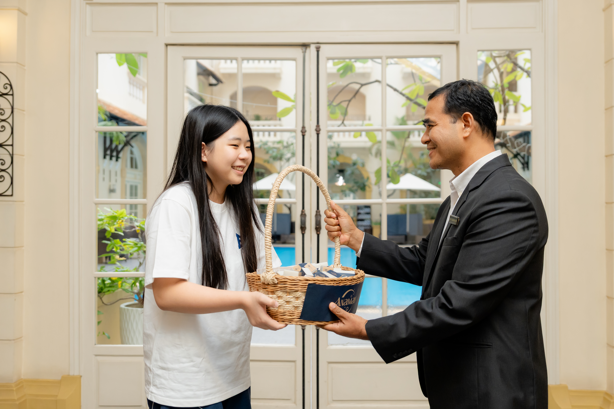

How ANAMAY Started
ANAMAY started from a simple but important concern. We saw that many people in rural Cambodia still face difficulties with hygiene and proper sanitation in their daily lives. That touched our hearts and made us want to do something meaningful. We created ANAMAY with the hope that, through handmade soap, we could build a business that not only provides useful products, but also helps support better sanitation for communities in need.
What Keeps Us Motivated
What keeps us motivated is knowing that ANAMAY can make a difference in people’s lives in more than one way. Since the beginning, ANAMAY has given women the opportunity to earn an income by supporting the production of our handmade soap. We are happy to be able to support them not only through work, but also by helping them gain practical skills and knowledge that they can carry with them into the future to support themselves and their families.
How We Introduce ANAMAY
As part of ANAMAY’s journey, we share our soap with hotels and hospitals so more people can experience our products in real everyday settings. This helps introduce the quality, care, and purpose behind ANAMAY in a simple and practical way. Through these small steps, we hope to build trust, create awareness, and bring the brand closer to the community.

The Next Chapter
Our next step is to grow ANAMAY into a sustainable business that can create a greater impact. Our goal is to allocate 100% of our profits to NGOs and community partners that help build proper toilets and sanitation facilities for people living in rural communities in Cambodia, allowing every step forward for the business to also become a step forward for the communities we hope to support.